先日、ダストクーラーの修理をしました。しかし実際に運用してみると、あまり冷えないことに気がつきました。100円均一で、温度計（目安計で正確ではありません）をゲットしてきて測ってみると23度くらいです。（室温28度）
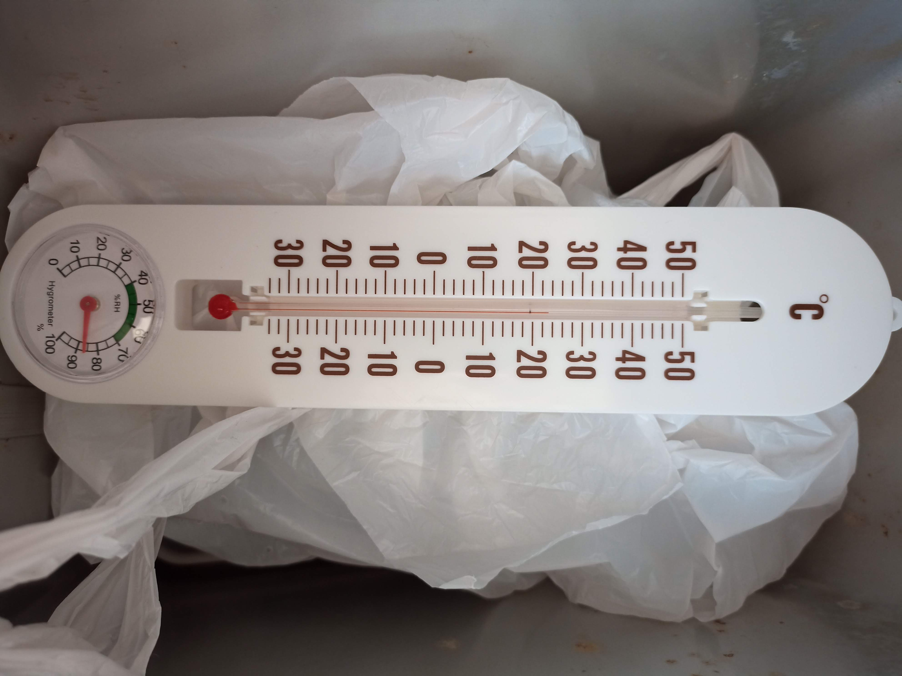
考えられる原因としては、以下が挙げられます。
・ペルチェ素子の冷える面に対して、アルミブロックの設置面積が足りない
・冷える面と、温まる面の防壁がない（熱が逃げる）
・温まる面にヒートシンクがついていて、間接的にケースの外側にファンがついている
→ 熱が効率的に冷えない → 冷える面もそれに準じ、さほど冷えない
つまり、改造したので構造的な部分の欠点、熱交換の部分の欠点などが考えられそうです。
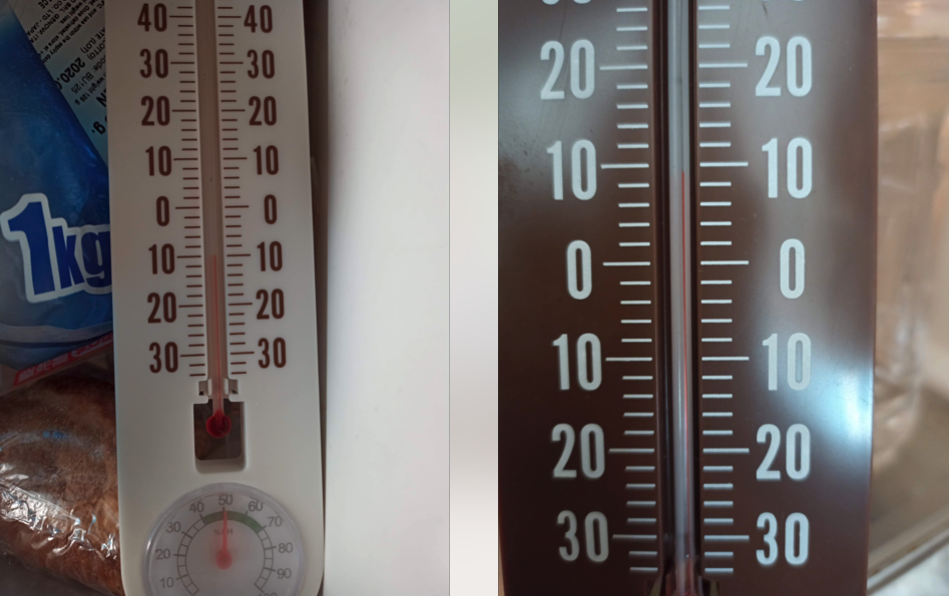
ちなみに、冷蔵庫は10度くらい、冷凍庫は−10度〜18度くらいのようでした。
生ゴミ保管庫としては、0度くらいを保ってくれると嬉しいのですが、もう少し改善できない実験してみることに。
まず、構造的な部分は次回考えるとして、今回はペルチェ素子を２段３段と重ねたらどうなるか実験してみました。まず、電源をJunkBoxから調達です。
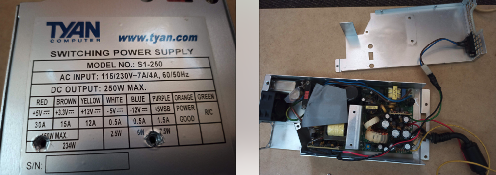
１Uサーバ用の２５０W電源です。中は少し改造してありますが、１２Vと５Vが取り出せるようになっています。この電源なら６０Wのペルチェ素子を３、４段重ねて駆動させられます。
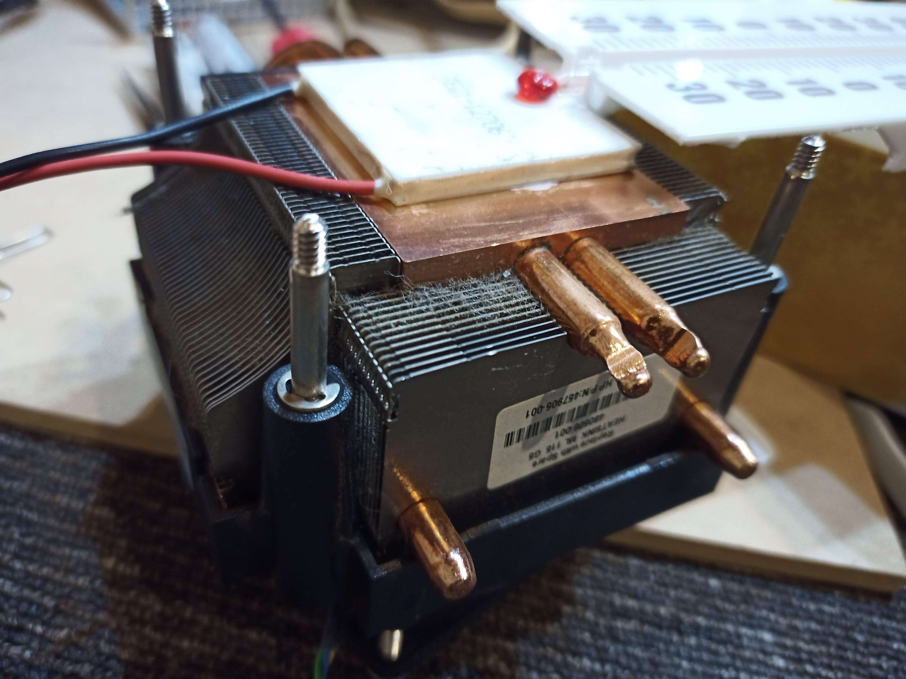
実験用の設備は、ファン付きのヒートシンクにペルチェ素子を付けて、表面温度を計測します。ファンは５Vに接続してあり、ほぼ音はならない回転数です。１２Vにファンを接続すると爆音でファンが回ります。
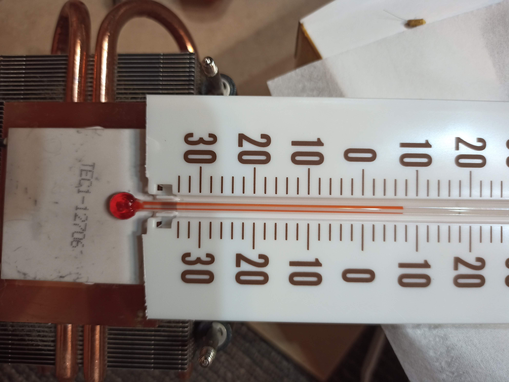
ペルチェ素子が１枚（12V）のときは、おおよそ9度でした。ファンは５Vに接続してあります。
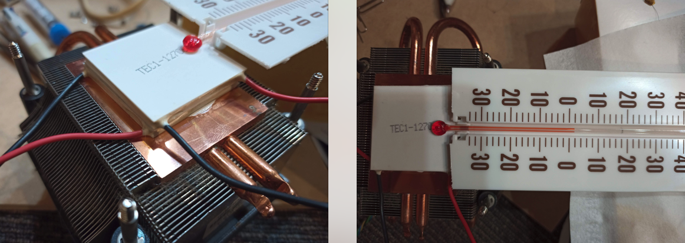
では、２枚に重ねてみるとどうなるでしょうか？ ペルチェ素子が２枚（12V）のときは一旦、1度付近まで下がりましたが、２、３分すると温度が上昇し、結局下の写真のように8度〜9度付近で安定しました。
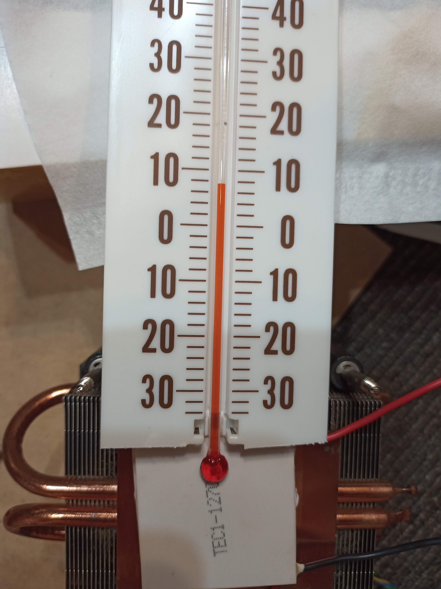
ペルチェ素子が３枚（12V）（３段）のとき、写真を撮り忘れましたが、今度は逆に温度が上がっていく現象になりました。一瞬、何が起きたのかパニックになりました。そうそうに電源を切ったので写真がなくてすみません・・・・うーむ（笑）
冷静になって考えてみると、１２V定格で３枚を密着させて動作させたときの熱を吸収できなったのでしょう。
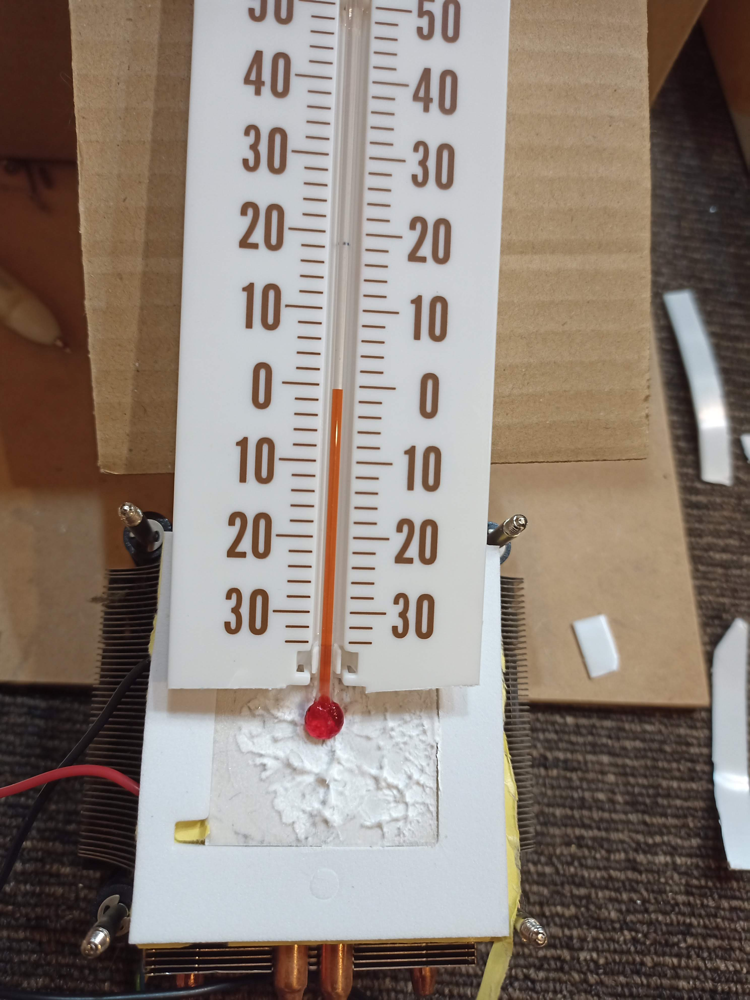
今度は１枚に戻して、ファンを１２Vに接続して実験。すると、0度付近で安定しました。でもファンが煩さすぎて運用する気にはなれません。しかし、発生する熱をうまく逃すことができれば、冷える面も下がるということはわかりました。熱を逃がせないと前回３段の時のように、ペルチェ素子自体が発熱してくることもわかりました。
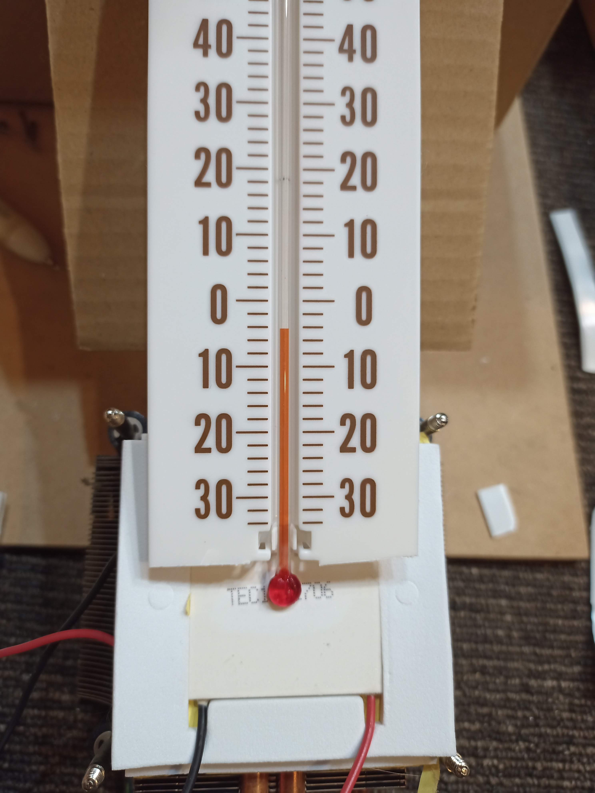
最後に、２枚接続し、下段は１２V、上段は５Vに接続、ファンは５Vで回します。すると、マイナス４度まで一旦下がりました！ ５分以上、稼働させ安定するポイントは−1度くらいでした。
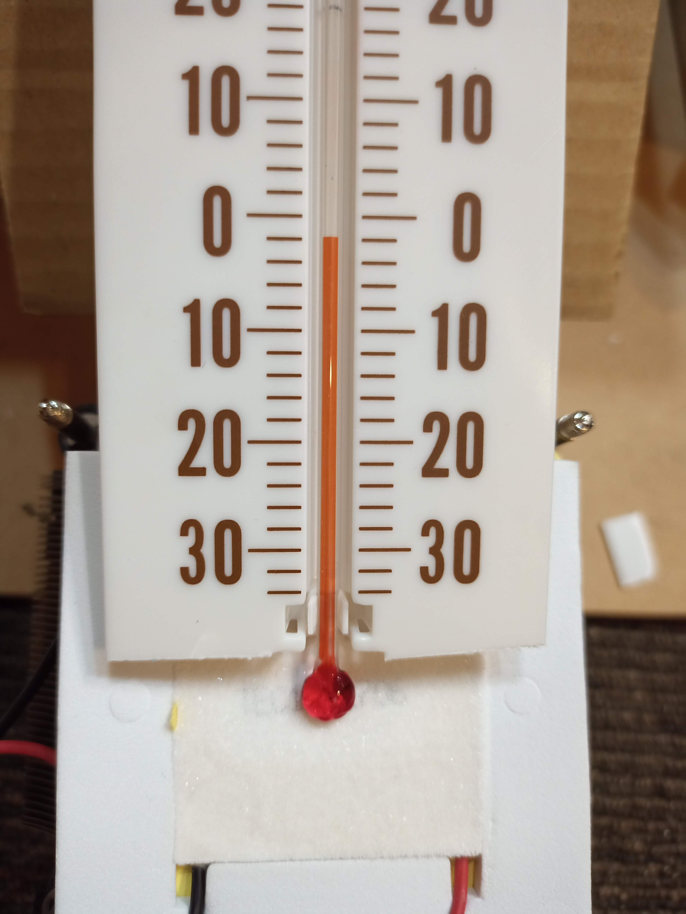
つまり今回の実験では、一番効率がいいのは、２枚の組み合わせです。CPUヒートシンク（ファン付き）側に接続するペルチェ素子は１２Vで定格駆動させ、上段は５Vで運用。これが今の所、最適のようです。
３段でも、電圧を調整して熱量をうまく逃すことができれば同じように効率的に冷えると思いますが、２段でマイナスまで行ってくれれば今回は良しとします。ブログを書いているとペルチェ素子が結露して凍結していました！ 記念に、-1℃ とドライバーで書いてみましたよ！
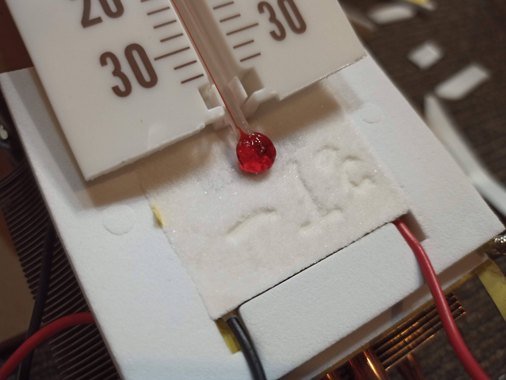
次回は構造的な部分にメスを入れてみたいと思います。なんとか、使えるダストボックスにしないとですね！
はじめまして。楽しく拝見させていただいてます。
情報提供に感謝いたします。
教えてください。
12Vのペルチェと5Vのペルチェは同じ電流電圧のペルチェですか？
また、サンドイッチの方法ですが、ペルチェとペルチェの間は
金属のブロックの様なもので距離をあけていますか？
すみません。
重ねた状態の横からの写真がありませんので、質問させて
いただきました。
宜しくお願いいたします。
TOMMYさん、こんにちわ！
はい、12Vと5Vのペルチェ素子は同じもので、TEC1-12706 12V 60W を使っています。
アリエクで5枚セットで買ったものです。確か送料込みで1500円くらいでした。
ペルチェとペルチェの間には熱伝導グリスを塗って重ねているだけです。金属板のようなのは入れていません。いろいろ工夫するともっと効率は良くなるのかもしれませんね。
ダストクーラーボックスを実際にシンク下に設置してみてわかったことですが、熱を排気しないとユニット自体をどんなに効率化しても限界があることがわかりました。つまり、シンク下の1平方くらいの空間の熱を排出しないと夏場は厳しいです。室内温度が約28度くらいで、ダストクーラーボックス内部は平均15度〜18度くらいになります。冬場は冷えすぎる感じで室内温度が約10度くらいで、2〜5度くらいになることがわかりました。
何をどこに設置して冷やすのかにもよると思いますが、排熱を効率良く循環させる仕組みがポイントになる感じです。
良いDIYライフを！
ご返信、ありがとうございます。かなり皆さんの実験ブログを拝見してますが、２枚重ねの成功者様はやはり、電圧を異なる値にしている。それと大前提ですが、放熱側のフィンの大きさやファンの大きさ、速度をかなり上げている方が共通してます。1点、電流のアンペア数を異なる値にするとかなりの違いが出てくるとの発言をされている方も居ます（あまり実験データが公表されていません）
多分、御覧になっていると思いますが、次の理論を実験する為、冷却用素子1枚に対して2枚の素子で冷却する方法を実験してみたいと考えています。同じ電圧と異なる電圧で1対2枚にする効果がどうか？
少し時間がかかりそうですが、ご連絡します。
ひとまずお礼まで。
すみません。
肝心なURLを忘れてました：笑
https://detail.chiebukuro.yahoo.co.jp/qa/question_detail/q13192817793